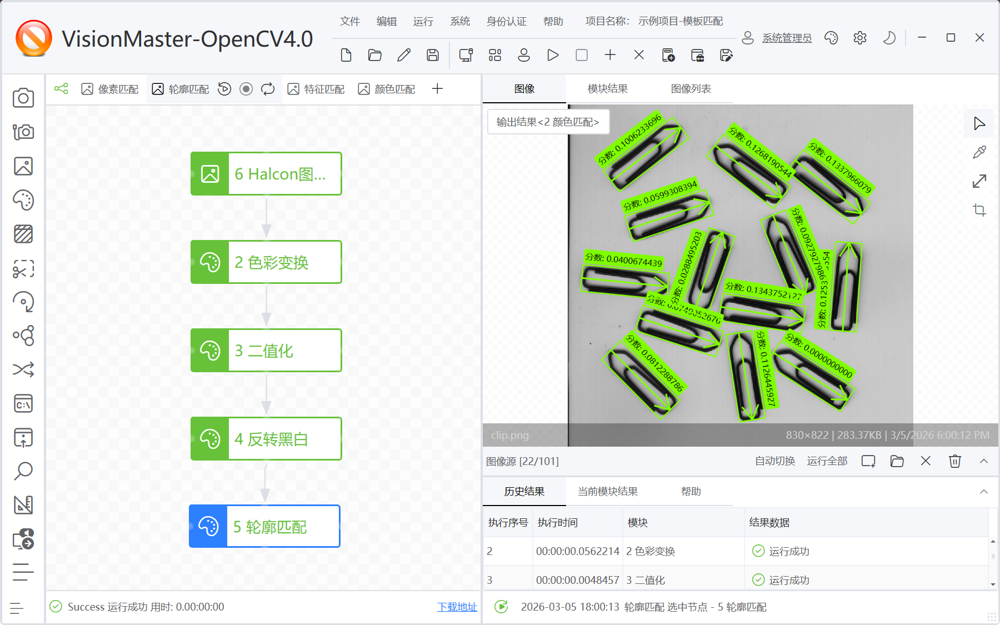
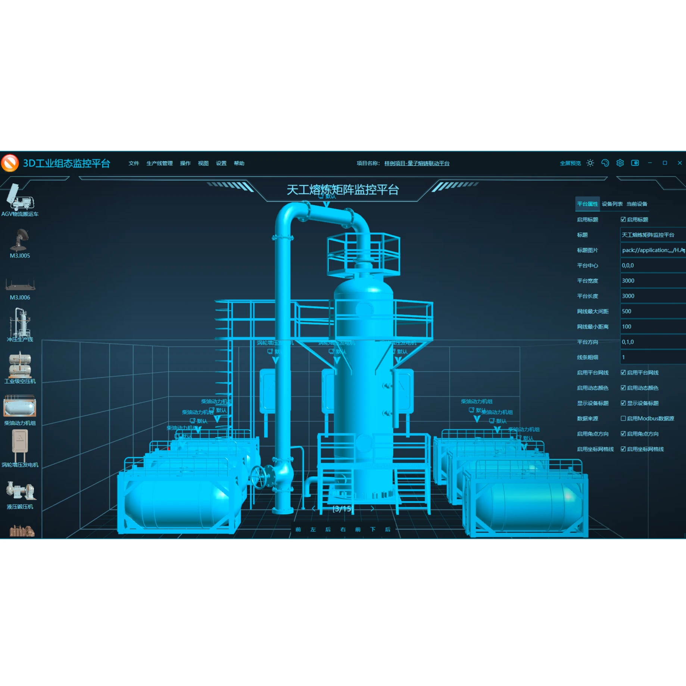
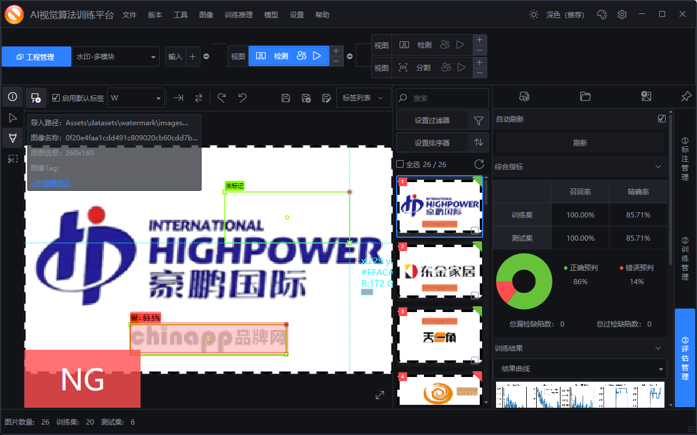
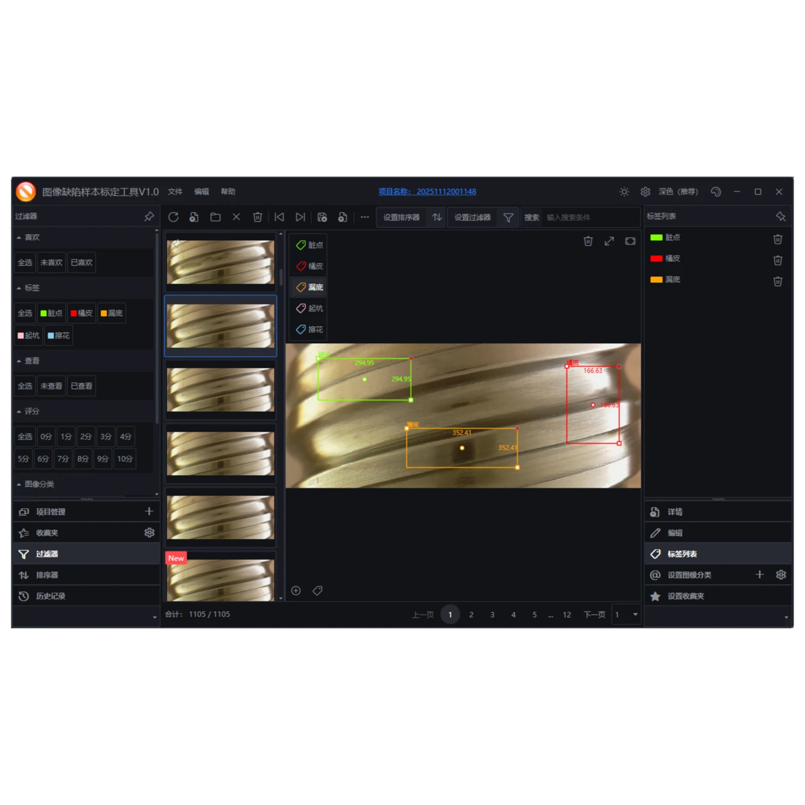
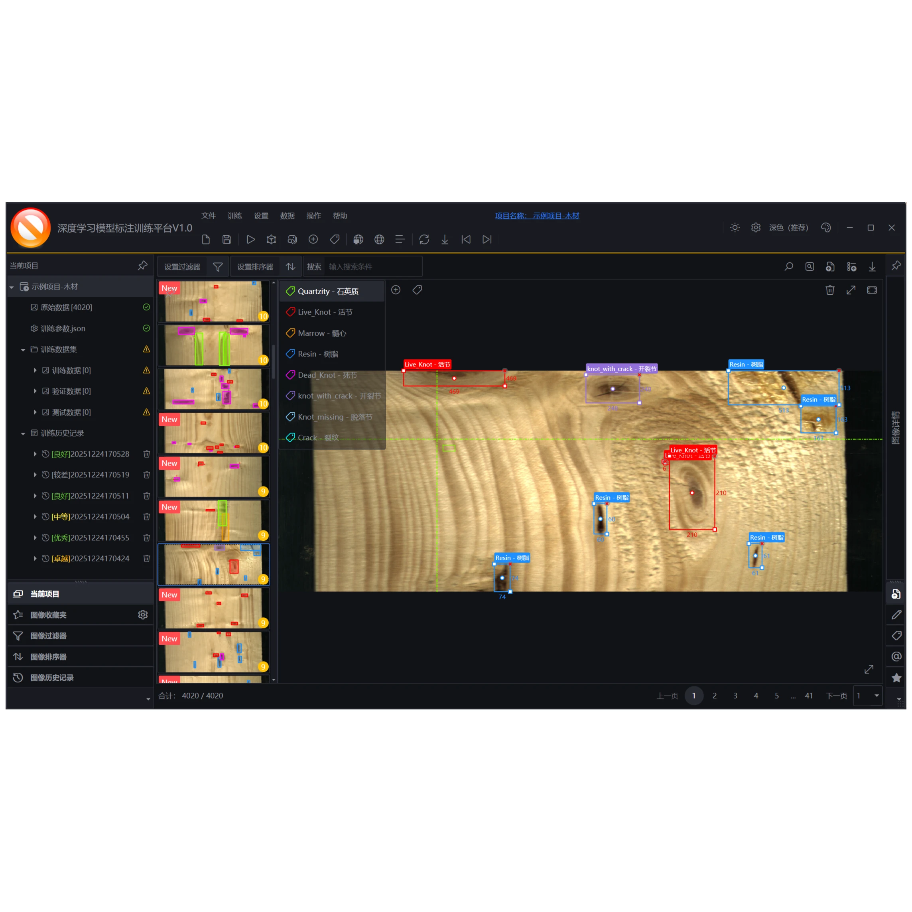

WPF 应用开发
关注复杂桌面应用的界面交互、性能体验、模块拆分与长期维护。
你好，我是 HeBianGu，长期关注 WPF 应用开发、控件库、主题系统、工程化实践与开源项目沉淀。
我热爱编程与界面设计，专注于创建高效、可维护且视觉体验良好的 WPF 应用。希望通过开源项目、示例工程与技术文章，帮助更多开发者提升桌面应用开发效率。
关注复杂桌面应用的界面交互、性能体验、模块拆分与长期维护。
沉淀可复用控件、主题样式、布局方案与常用业务组件。
围绕 WPF、MVVM、.NET 工程化与桌面端项目落地提供经验分享。
强力推荐的 WPF 控件库与应用框架，包含主题、控件、示例和常用桌面端开发能力。
访问项目WPF 控件和基础能力沉淀，为业务应用、控件扩展和工程复用提供基础支撑。
访问项目面向流程图、节点编辑、连线交互和可视化编排场景的 WPF 图形项目。
访问项目面向桌面端数据展示和可视化分析的 WPF 图表项目。
访问项目Avalonia 控件与跨平台桌面 UI 实践项目，探索更广泛的桌面端技术栈。
访问项目面向桌面端音视频处理、格式转换和媒体工具场景的 WPF 项目。
访问项目基于 WPF 的 Web 代理工具项目，适合网络调试、代理配置和桌面工具实践。
访问项目WPF 媒体播放器项目，聚焦桌面端音视频播放界面和交互体验。
访问项目WPF 系统键盘与输入辅助项目，适用于触控屏、工控终端和桌面输入场景。
访问项目面向大屏展示、数据看板和可视化页面搭建的 WPF 开源项目。
访问项目WPF 图片浏览与播放项目，适合图像展示、预览和桌面媒体工具场景。
访问项目



